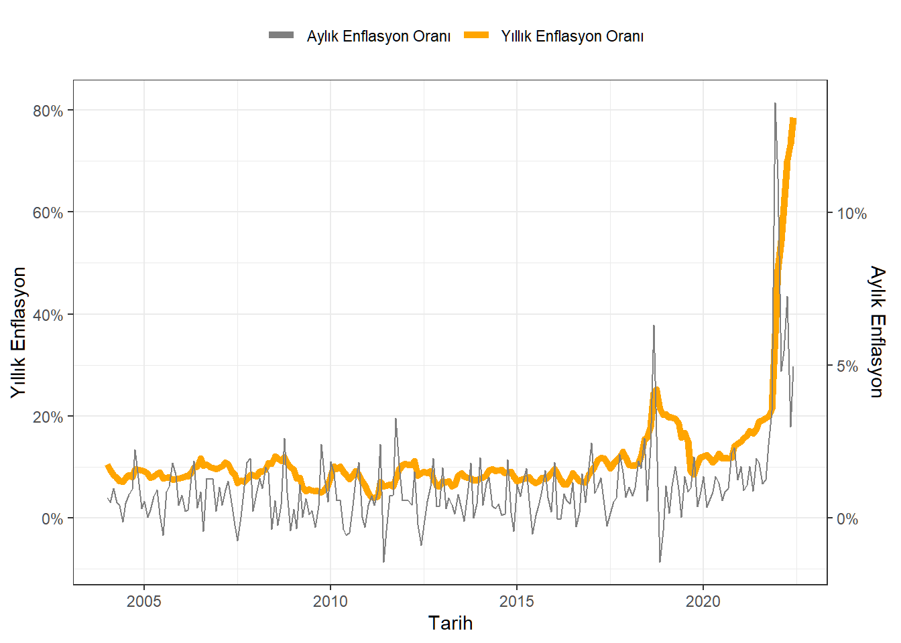
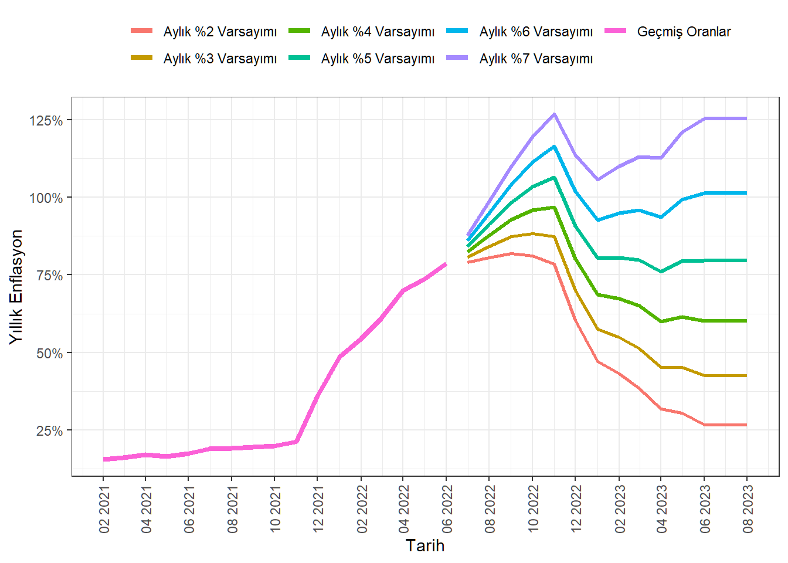

Kod
library(tidyverse)
library(magrittr)
library(lubridate)
library(readxl)
library(scales)
library(gt)Raif Serkan Albayrak
5 Temmuz 2022
Aylık enflasyon verisinin kullanarak yıllık enflasyon hesaplaması üzerinden gidilerek ay bazında Temmuz 2022’den itibaren Ağustos 2023’e kadar yıllık enflasyonun nasıl değiştiği, bu süreç içinde ortalama enflasyon da hesaplanacak.
Veri evds sistemi üzerinden indirildi. Sol menüde Fiyat Endeksleri altında, Fiyat Endeksi (Tüketici)(2003=100)(TUİK)(Yeni Seri) verisi işaretlenip, orta menüde 0.GENEL opsiyonu seçilip, formül menüsünde Yüzde Değişim ve Yıllık Yüzde Değişim opsiyonları seçildikten sonra Ekle düğmesine basılır. Sağ menüde, Frekans olarak Aylık opsiyonu seçilir, Başlangıç Tarihi de 01-2004 seçilir. Son olarak apor Seçenekleri kısmında en sol icon olan Rapor Oluştur ikonu tıklandığında veri kaydedilmeye hazır olacak şekilde sayfada gösterilir. Bu aşamada seçilen verilerin finansal kodları da görünmektedir. Bu analizde kullanılacak verilerin kodları: TP FG J0-1 ve TP FG J0-3’tür. Veriye kolayca ulaşmak için burayı tıklayabilirsiniz.
Veri üzerinde ilk yapılacak işlem Tarih değişkenini R’a tanıtmak. Bu amaçla başlangıçta Lubridate kütüphanesi yüklenmişti. Metinden tarihe dönüştürme fonksiyonları için bu hatırlama kağıdı kullanılabilir.
R içinde tarih değişkenleriyle işlemleri özetleyen bir yazıyı yakında yayınlanacaktır. Ayrıca tarih tipinde bir değişkenin grafiklerde veya raporlarda gösteriminde formatlanma opsiyonları için; ?strptime kullanılabilir.
EVDS$Tarih <- ym(EVDS$Tarih)
colnames(EVDS)[2:3] <- c("Ay","Yıl")
EVDS$Ay %<>% as.numeric() # %<>% is an assigment pipe operator.
EVDS$Yıl %<>% as.numeric()
Enflasyon <- EVDS
Enflasyon <- Enflasyon |> mutate(Ay=Ay/100,Yıl=Yıl/100)
theme_set(theme_bw())
ggplot(Enflasyon,aes(x=Tarih))+
geom_line(aes(y=Yıl, color="Yıllık Enflasyon Oranı"),size=1.8)+
geom_line(aes(y=Ay*6, color="Aylık Enflasyon Oranı"))+
theme(legend.title = element_blank(),legend.position = "top")+
scale_y_continuous(labels = scales::percent,
sec.axis = sec_axis(~./6, name="Aylık Enflasyon",
labels = scales::percent))+
labs(x="Tarih", y="Yıllık Enflasyon")+
scale_color_manual(values = c("gray50","orange1"))
# PLOTLY ile Secondary Axis Kullanarak Aylık ve Yıllık Enflasyon
# fig <- plot_ly(Enflasyon,type = "scatter",mode="lines") |>
# add_trace(x=~Tarih,y=~Yıl,name="Yıllık Enflasyon Oranı")
#
# ay <- list(
# overlaying = "y",
# side = "right",
# title = "<b>Aylık</b> Enf. Oranı")
#
# fig <- fig %>% add_trace(x = ~Tarih, y = ~Ay,
# name = "Aylık Enflasyon Oranı",
# yaxis = "y2", mode = "lines", type = "scatter")
#
# fig <- fig %>% layout(
# title = "Yıllık - Aylık Enflasyon Oranı", yaxis2 = ay,
# xaxis = list(title="Tarih "),
# yaxis = list(title="<b>Yıllık</b> Enf. Oranı")
# )%>%
# layout(plot_bgcolor='#e5ecf6',
# xaxis = list(
# zerolinecolor = '#ffff',
# zerolinewidth = 2,
# gridcolor = 'ffff'),
# yaxis = list(
# zerolinecolor = '#ffff',
# zerolinewidth = 2,
# gridcolor = 'ffff')
# )
#
# figYıllık enflasyon oranı bilindiği üzere aylık enflasyon oranlarının bileşik faizi şeklinde hesaplanır. Bu hesaplamada 12 geçmiş 12 aylık pencere kullanılır ve her ay bu pencere bir adım ilerletilir.
\[ e_t=\prod_{i=0}^{11}\left(1+a_{t-i}\right)-1 \]
Aşağıdaki tabloda bu mantıkla yapılan hesaplama sonuçları (son 6 gözlem) verilmiştir. Beklendiği gibi değerler açıklanan oranlarla aynıdır. Dolayısıyla artık önümüzdeki döneme yönelik aylık enflasyon tahminleri yaparak yıllık enflasyon ve ortalama yıllık enflasyon değerleri hesaplanabilir.
lagged <- function(x){
result <- 1
for (i in 1:12){
result <- result*(1+lag(x,i))
}
result-1
}
Enflasyon <- Enflasyon |> mutate(Hesap = lead(lagged(Ay)))
son_index <- dim(Enflasyon)[1]
x <- Enflasyon$Ay[(son_index-11):son_index]
e <- prod(1+x)-1
Enflasyon$Hesap[son_index] <- e
##TABLO
tail(Enflasyon) |> gt::gt() |> tab_header(
title = "Enflasyon Oranları",
subtitle = "Aylık Bileşik Faiz Hesabı Olarak Yıllık Enflasyon"
) |> fmt_date(columns = Tarih,date_style = 5) |>
fmt_percent(columns = c(Ay,Yıl,Hesap),decimals = 3)| Enflasyon Oranları | |||
|---|---|---|---|
| Aylık Bileşik Faiz Hesabı Olarak Yıllık Enflasyon | |||
| Tarih | Ay | Yıl | Hesap |
| January 1, 2022 | 11.104% | 48.691% | 48.691% |
| February 1, 2022 | 4.809% | 54.439% | 54.439% |
| March 1, 2022 | 5.464% | 61.145% | 61.145% |
| April 1, 2022 | 7.248% | 69.971% | 69.971% |
| May 1, 2022 | 2.981% | 73.496% | 73.496% |
| June 1, 2022 | 4.952% | 78.618% | 78.618% |
Aylık enflasyon oranlarının 2023 yılı Ağustos ayına kadar %2-%7 olduğu senaryolar için hesaplamalar yapıldığında,
aa <- tibble()
for (i in 1:15){
aa[i,"Tarih"] <- Enflasyon$Tarih[son_index]+months(i)
}
#Senaryo Girdilerini Kodla
Estimates <- bind_rows(Enflasyon,aa) |>
mutate(Ay2=ifelse(is.na(Ay),0.02,Ay)) |>
mutate(Ay3=ifelse(is.na(Ay),0.03,Ay)) |>
mutate(Ay4=ifelse(is.na(Ay),0.04,Ay)) |>
mutate(Ay5=ifelse(is.na(Ay),0.05,Ay)) |>
mutate(Ay6=ifelse(is.na(Ay),0.06,Ay)) |>
mutate(Ay7=ifelse(is.na(Ay),0.07,Ay))
#Yıllık Enflasyon Hesapla
Estimates <- Estimates |>
mutate(Yıl2 = lead(lagged(Ay2))) |>
mutate(Yıl3 = lead(lagged(Ay3))) |>
mutate(Yıl4 = lead(lagged(Ay4))) |>
mutate(Yıl5 = lead(lagged(Ay5))) |>
mutate(Yıl6 = lead(lagged(Ay6))) |>
mutate(Yıl7 = lead(lagged(Ay7)))
e.period <- dim(Estimates)[1]-son_index
Estimates <- Estimates[-(son_index+e.period),]Bu varsayımlar sonucu hesaplanan yıllık enflasyon tahminleri elde edilir. Bu yazının hazırlandığı Temmuz 2022 ortalarında ekonomi Ekim 2021’den itibaren süren bir krizin tam da ortasında bulunmaktadır. Krizden ne zaman ve nasıl çıkılacağına dair herhangi bir gösterge veya umut da an itibariyle mevcut değildir. Bu şartlar altında enflasyonla ilgili öngörüler oluşturulurken iyimser olmayı gerektirecek hiçbir neden bulunmamaktadır. Aşağıdaki tabloda, gerçekçi senaryoların aylık enflasyonun en iyimser ihtimalle %4 olacağı durumlar olduğunu düşünüyoruz.
Estimates[1:son_index,11:16] <- NA
Estimates[Estimates$Tarih>my("August 2021"),
c("Tarih","Yıl","Yıl2","Yıl3","Yıl4","Yıl5","Yıl6","Yıl7")] |>
gt::gt() |> tab_header(
title = "Enflasyon Oranları",
subtitle = "Aylık Bileşik Faiz Hesabı Olarak Yıllık Enflasyon") |>
fmt_date(columns = Tarih,date_style = 5) |>
fmt_percent(columns = c(Yıl,Yıl2,Yıl3,Yıl4,Yıl5,Yıl6,Yıl7),decimals = 3)| Enflasyon Oranları | |||||||
|---|---|---|---|---|---|---|---|
| Aylık Bileşik Faiz Hesabı Olarak Yıllık Enflasyon | |||||||
| Tarih | Yıl | Yıl2 | Yıl3 | Yıl4 | Yıl5 | Yıl6 | Yıl7 |
| September 1, 2021 | 19.583% | NA | NA | NA | NA | NA | NA |
| October 1, 2021 | 19.890% | NA | NA | NA | NA | NA | NA |
| November 1, 2021 | 21.313% | NA | NA | NA | NA | NA | NA |
| December 1, 2021 | 36.081% | NA | NA | NA | NA | NA | NA |
| January 1, 2022 | 48.691% | NA | NA | NA | NA | NA | NA |
| February 1, 2022 | 54.439% | NA | NA | NA | NA | NA | NA |
| March 1, 2022 | 61.145% | NA | NA | NA | NA | NA | NA |
| April 1, 2022 | 69.971% | NA | NA | NA | NA | NA | NA |
| May 1, 2022 | 73.496% | NA | NA | NA | NA | NA | NA |
| June 1, 2022 | 78.618% | NA | NA | NA | NA | NA | NA |
| July 1, 2022 | NA | 78.961% | 80.716% | 82.470% | 84.225% | 85.979% | 87.734% |
| August 1, 2022 | NA | 80.519% | 84.076% | 87.668% | 91.294% | 94.955% | 98.651% |
| September 1, 2022 | NA | 81.852% | 87.253% | 92.760% | 98.374% | 104.096% | 109.927% |
| October 1, 2022 | NA | 81.153% | 88.362% | 95.784% | 103.423% | 111.284% | 119.371% |
| November 1, 2022 | NA | 78.507% | 87.430% | 96.707% | 106.348% | 116.363% | 126.763% |
| December 1, 2022 | NA | 60.314% | 69.978% | 80.123% | 90.768% | 101.932% | 113.635% |
| January 1, 2023 | NA | 47.177% | 57.579% | 68.606% | 80.287% | 92.655% | 105.743% |
| February 1, 2023 | NA | 43.233% | 54.860% | 67.305% | 80.616% | 94.845% | 110.045% |
| March 1, 2023 | NA | 38.528% | 51.242% | 64.982% | 79.821% | 95.835% | 113.104% |
| April 1, 2023 | NA | 31.749% | 45.251% | 59.985% | 76.051% | 93.555% | 112.610% |
| May 1, 2023 | NA | 30.495% | 45.278% | 61.569% | 79.503% | 99.230% | 120.908% |
| June 1, 2023 | NA | 26.824% | 42.576% | 60.103% | 79.586% | 101.220% | 125.219% |
| July 1, 2023 | NA | 26.824% | 42.576% | 60.103% | 79.586% | 101.220% | 125.219% |
| August 1, 2023 | NA | 26.824% | 42.576% | 60.103% | 79.586% | 101.220% | 125.219% |
Baz etkisi sayesinde yıllık enflasyonun 2022 yılının Aralık ayı ve Ocak 2023’te bir miktar düşeceği görülmektedir. Ancak bu düşüş aslında 2021 Aralık ve 2022 Ocak’ta açıklanan yüksek oranların hesaplama penceresini terk etmesi kaynaklıdır.
ggplot(Estimates[Estimates$Tarih>my("January 2021"),],aes(x=Tarih))+
geom_line(aes(y=Yıl, color="Geçmiş Oranlar"),size=1.5,na.rm=TRUE)+
geom_line(aes(y=Yıl2, color="Aylık %2 Varsayımı"),size=0.9,na.rm=TRUE)+
geom_line(aes(y=Yıl3, color="Aylık %3 Varsayımı"),size=0.9,na.rm=TRUE)+
geom_line(aes(y=Yıl4, color="Aylık %4 Varsayımı"),size=1.2,na.rm=TRUE)+
geom_line(aes(y=Yıl5, color="Aylık %5 Varsayımı"),size=1.2,na.rm=TRUE)+
geom_line(aes(y=Yıl6, color="Aylık %6 Varsayımı"),size=1.2,na.rm=TRUE)+
geom_line(aes(y=Yıl7, color="Aylık %7 Varsayımı"),size=1.2,na.rm=TRUE)+
scale_y_continuous(labels = scales::percent)+
labs(x="Tarih", y="Yıllık Enflasyon")+
theme(legend.title = element_blank(),legend.position = "top")+
(scale_x_date(breaks=date_breaks("2 months"),
labels=date_format("%m %Y")))+
theme(axis.text.x = element_text(angle = 90, vjust = 0.5, hjust=1))
2022 yılının ortaları ekonomik krizin etkilerinin iyice hissedildiği bir dönem olarak hatırlanacak. Vakıf üniversiteleri bu volatil ortamda ücret politikalarını belirlerken oldukça zorlandı. Eğitim ücretlerine %30-%110 aralığında zamlar yapıldı. Enflasyonla doğrudan ilişkili maliyet artışına, asgari ücrete yıl içinde yapılan zam, akademik personele yılda iki defa zamlanan devletin emsal ücretini ödeme gibi kanun maddelerinin getirdiği yükler bütçeleri zorladı.
Enflasyon tahmninin üniversite analitiğine tam da bu aşamada faydası bulunmaktadır. Aylık artış oranları senaryoları için takip eden akdemik dönem boyunca etken olacak ortalama enflasyon oranı ile eğitim ücretlerine yapılacak zam oranı için bir alt sınır tespit edilebilir. Aşağıda bu hesaplama sonucu elde edilen değerler göre Aylık ortalama %5 enflasyon senaryosu ile Eylül 2022 - Ağustos 2023 döneminde Yıllık Enflasyon ortalama %86.2 seviyelerinde olacak. Aylık beklenti %4 olduğunda bu değer %72.3’e düşerken, %6 olduğunda ise %101 seviyesine çıkmaktadır.
@online{serkanalbayrak2022,
author = {Raif Serkan Albayrak},
title = {2022 Yıl Sonu Enflasyon Tahminleri},
date = {2022-07-05},
langid = {tr}
}